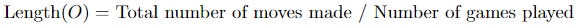
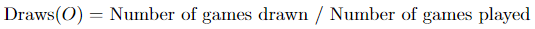

This page isn't as pretty
But that's OK
Because you are a truth-seeker
And you are only here for the truth
Theory typically refers to the move sequences in an opening that are known and well documented. Openings may be highly theoretical if they contain long forcing lines, have many viable choices, and are somewhat popular.
Describing theory analytically involves the ratio of common lines to uncommon lines. This is not a perfect representation, but it serves as a decent proxy for now.
Openings that contain very common inaccuracies or somewhat-frequent blunders are ranked high in “Mistakes”.
The "Mistakes" statistic of a given opening, O, is calculated by:
m is the set of all possible moves in the opening, O (below a specified depth).
E(mn) is the computer's evaluation of the game after move mn. |E(mn-1)-E(mn)| is the change in evaluation after a move.
N(mn) is the number of times the move mn is played in opening O. The purpose of this is to give more weight to the mistakes that happen frequently
2.5 is an arbitrary constant. If it were greater (>3.0), blunders would contribute more to the statistic. If it were smaller (<2.0), abundant, minor inaccuracies would be prominent. A value somewhere in the middle attempts to catch both small mistakes and huge blunders.
"Eval" refers to a computer's evaluation of the opening position. The eval for every opening was determined by Stockfish 16, at a depth of 50.
"Length" refers to the average number of moves per game that started with the given opening.
"Draws" refers to the frequency of a drawn games that started with the given opening.
"Popularity" refers to the number of times the given opening was played in the sample of 30 million games.